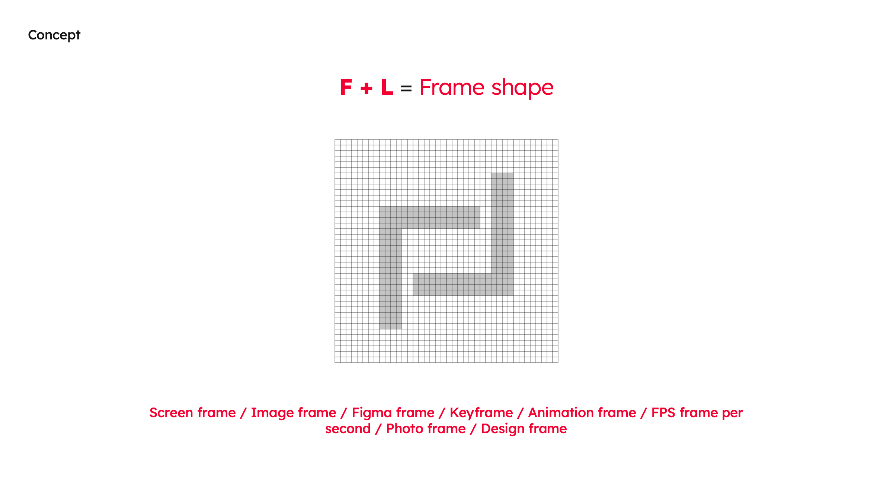
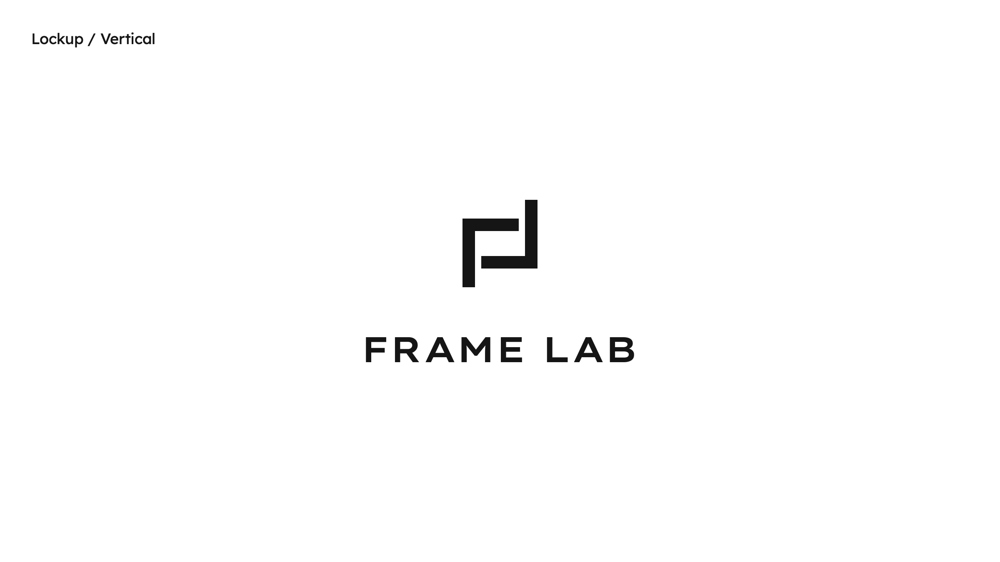
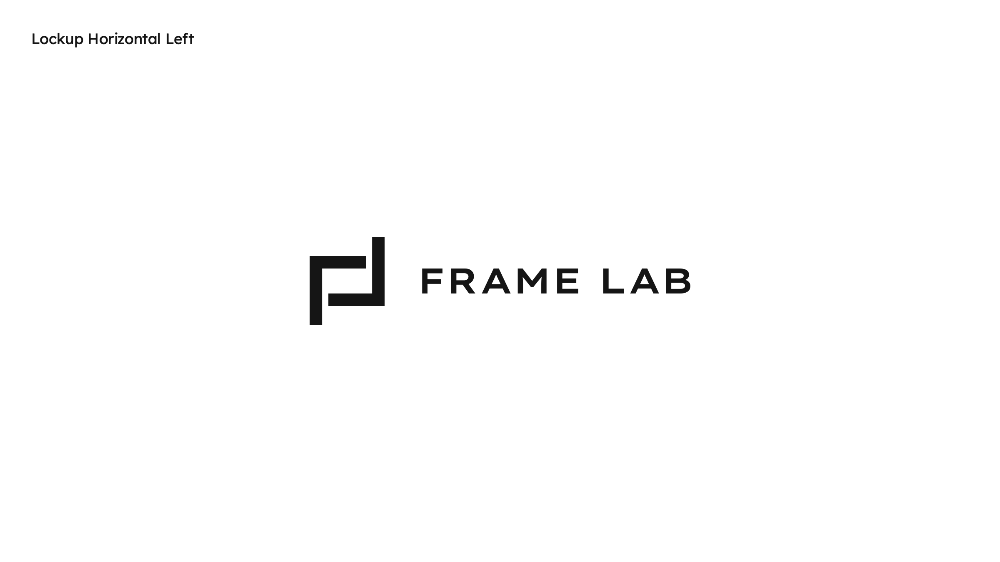
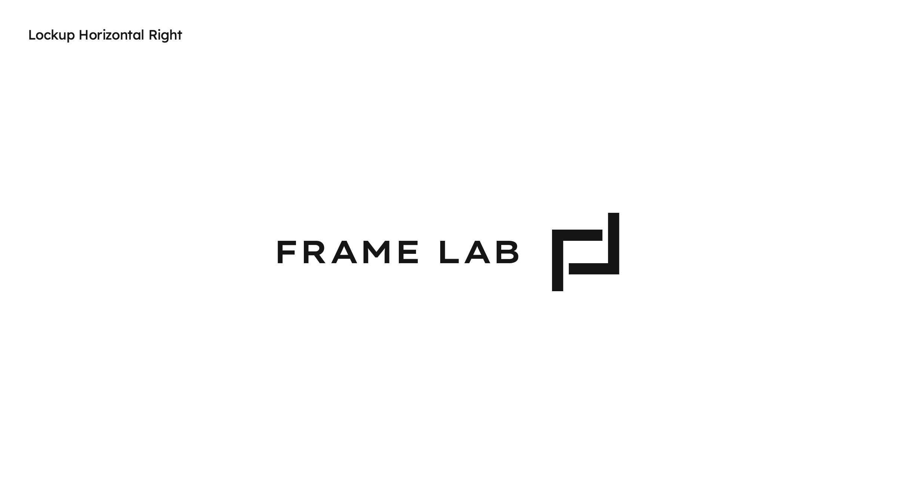
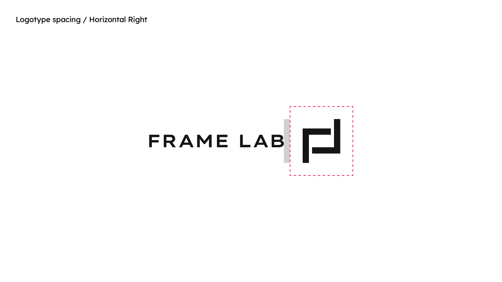
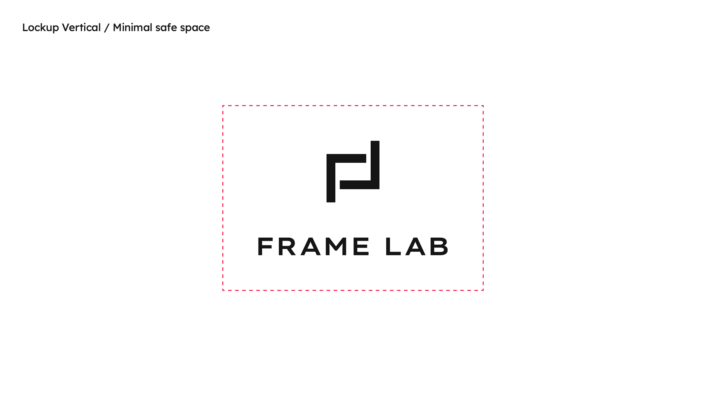
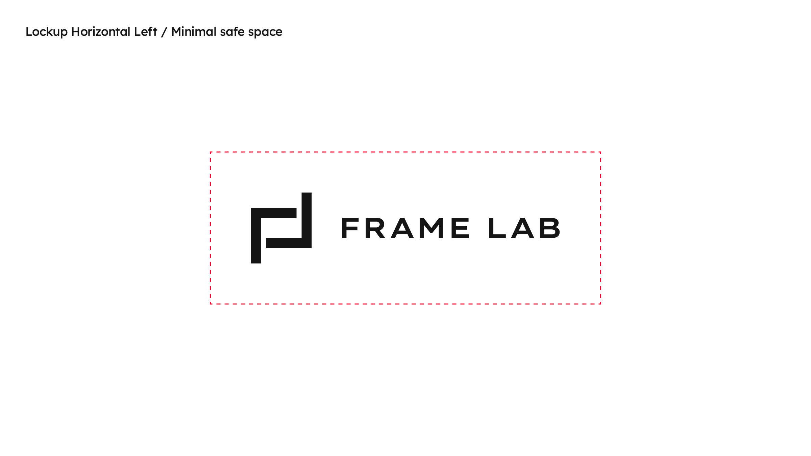
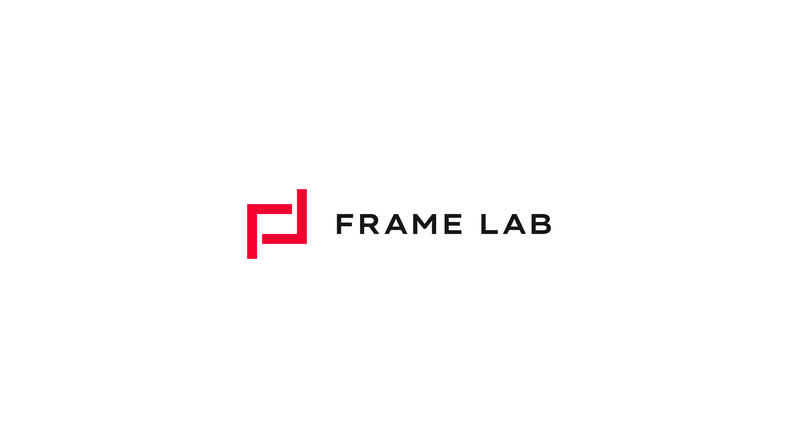
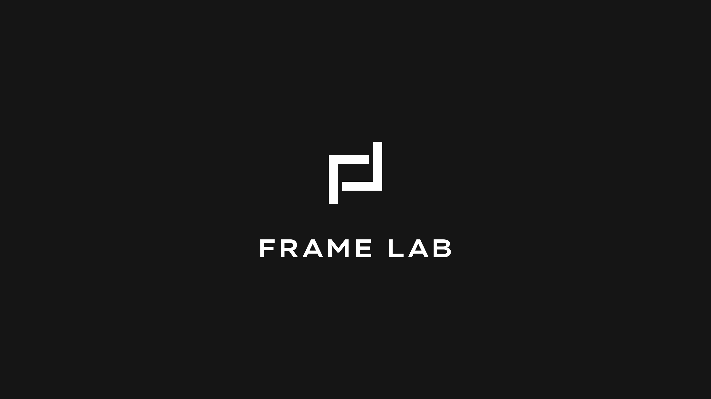
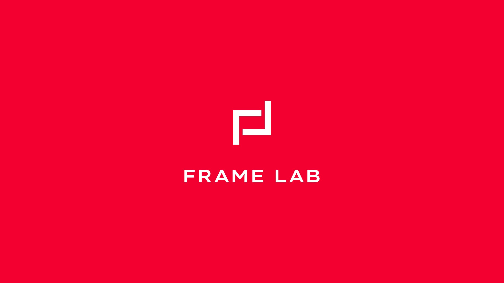

Frame Lab — a mark built from two letters and one idea. (2026)
Identity for my own studio: a logomark, three lockups, a compact colour system and avatar set designed to work from a 16 px favicon to a full-screen title card.

Concept
The mark joins an F and an L into a single frame shape. Two brackets, offset on a strict grid, never quite close — leaving space for whatever goes inside.
“Frame” carries every discipline the studio works in: a screen frame, an image frame, a Figma frame, a keyframe, frames per second, a photo frame, a design frame.

Logomark
Built from four bars of equal weight. The minimum safe space equals two stroke widths on every side, measured from the outer ends of the mark.
Lockups
Three lockups cover every layout: vertical for centred compositions, horizontal left for headers and documents, horizontal right for signatures and end cards.
The wordmark is set in Lexend Giga, uppercase with open tracking. The gap between mark and wordmark is defined by the mark’s own proportions.








Colour
A deliberately small palette: one confident red for the mark and moments of emphasis, a near-black ink for type, and plenty of white. The logo reverses to white on ink or red backgrounds.




Typography
Lexend Giga gives the wordmark its wide, engineered stance and is used for headlines across the brand. Figtree handles everything else — friendly, compact and highly legible on screen.
Websites, mobile apps, animation and visual identity — framed with care.
Applications
Layout templates for presentations and documents keep the mark anchored to a corner or a red sidebar, and a set of square and round avatars covers social profiles and app icons.